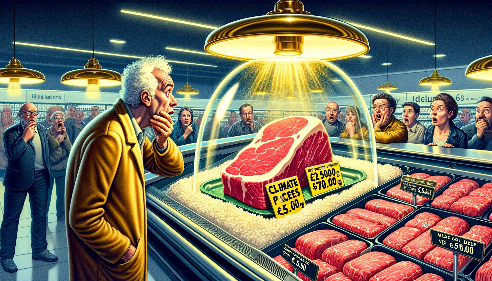

Når Klimasynderne i Køledisken Skal Finansiere Morgendagens Vejr

I den nyeste vending af "Lad os lege med folks pengepung", har Klimarådet fundet en løsning, der er lige så innovativ som at sælge is til eskimoer: lad os gøre hakket oksekød til den nye luksusvare! I en verden, hvor CO2-afgifter bliver kastet rundt som konfetti ved et bryllup, foreslår Klimarådet nu, at vi ikke kun skal skatte landmændene ind i glemslen, men også forbrugerne skal have en tur i mallemøllen.
"Forestil dig," siger en talsmand med et glimt i øjet, "at gå ned til din lokale køledisk og tænke 'Skal jeg købe dette stykke kød eller en lille ø?' For ifølge Klimarådet skal 500 gram oksekød koste 'en hel del' mere end fem kroner ekstra. Hvad er 'en hel del', spørger du? Åh, bare en ubetydelig stigning, der skal sikre, at næste gang du planlægger din spaghetti bolognese, overvejer du måske at anvende guldflager i stedet for kød som en mere budgetvenlig mulighed.
Peter Møllgaard fra Klimarådet, en mand med en drøm om et kødfrit samfund, siger, "Det er fordi, vi kigger på Danmarks globale fodaftryk." Forståeligt. For hvad er vel mere globalt end at straffe Hr. og Fru Jensen for deres lidenskab for frikadeller?
Og lad os ikke glemme den spændende udfordring med at implementere disse afgifter. "Hvordan beregner man præcis klimabelastningen af en pizza fra Dr. Oetker?" undrer et ekspertudvalg. Svaret er simpelt: gæt! Og lad forbrugerne betale gennemsnittet. For i klimakampens navn er "godt nok" det nye perfekt.
Men ro på, der er stadig håb. Klimarådet har ikke "en fast holdning til, hvor stor afgiften skal være." Det er betryggende at vide, at de, i deres kloge overvejelser, kun er sikre på én ting: det skal koste dig mere. Hvor meget mere? Det er detaljer – og hvem bekymrer sig om dem, når planetens skæbne står på spil?
Så næste gang du står i køledisken og stirrer ned på det hakket oksekød, der nu koster mere end en mindre familiebil, kan du trøste dig med, at du bidrager til en bedre verden. Eller i det mindste en verden, hvor kun de rigeste kan nyde deres bøffer, mens resten af os tygger på glæden ved at vide, at vi har "gjort noget".
Og til de politikere, der vakler: frygt ikke. I denne ædle kamp mod klimaforandringerne er det kun rimeligt, at vi alle sammen – især Hr. og Fru Jensen – skal ofre lidt. Eller meget. Afhængigt af, hvem du spørger. Men husk: intet siger "jeg bekymrer mig om planeten" som en tom pung og en kødfri middag. Velbekomme!